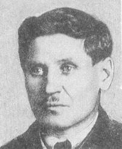

Евдокимов Г.Е.
Евдокимов Григорий Еремеевич
Советский партийный и государственный деятель.
Октябрь 1884—25.08.1936
Родился в семье мещанина. Окончил городское училище и с 15 лет работал матросом на речных судах. В 1903 г. вступил в РСДРП. Вёл революционную работу среди трудового населения Омска и Павлодара. Впервые арестован в 1908 г. Спасаясь от преследования полиции, в 1913 г. уехал в Петербург, где вновь подвергался арестам. В 1915 г. арестован и осуждён к административной высылке в Верхоленский округ Иркутской губернии, откуда бежал. В 1917 г. — агитатор Петроградского комитета РСДРП(б). Участвовал в создании отрядов Красной гвардии. Избирался членом Всероссийского Учредительного собрания. В 1918—1919 гг. — участник установления Советской власти на Северо-Западе России, комиссар промышленности Союза коммун Северной области. В годы Гражданской войны участвовал в обороне Петрограда. С 25 августа 1920 г. по 10 мая 1921 г. — начальник Политического отдела и член РВС 7-й армии Западного фронта. С 1922 г. по 1925 г. — председатель Петроградского Совета профессиональных союзов. В 1923—1925 гг. — заместитель председателя Петроградского Совета и Экономического совещания Г.Е. Зиновьева. Постановлением ЦИК СССР от 21.05.1925 г. «Об образовании Президиума ЦИК СССР» включён в состав Президиума. С сентября 1925 г. по 8 января 1926 г. — первый (ответственный) секретарь Ленинградского губкома ВКП(б). Будучи одним из ближайших соратников Г.Е. Зиновьева, Г.Е. Евдокимов активно участвовал в деятельности «новой оппозиции». На XIV съезде ВКП(б) (декабрь 1925 г.) «новая оппозиция» была разгромлена, однако все ее лидеры были переизбраны в состав ЦК. По окончании работы съезда ЦК послал в Ленинград группу коммунистов для разъяснения решений съезда и разоблачения антипартийного поведения лидеров «новой оппозиции». 1 января 1926 г. на Пленуме ЦК ВКП(б) избран секретарём ЦК ВКП(б), членом Оргбюро ЦК ВКП(б) и переведен на работу в Москву. После состоявшегося весной 1926 г. объединения сторонников Л.Д. Троцкого и Г.Е. Зиновьева Евдокимов становится активным участником «объединенной оппозиции». 9 апреля 1926 г. Г.Е. Евдокимов освобождён от должности секретаря и члена Оргбюро, 14 ноября 1927 г. выведен из состава ЦК ВКП(б). Практически одновременно из состава ЦК выведены и другие лидеры троцкистско-зиновьевского блока. На XV съезде ВКП(б) в декабре 1927 г. Евдокимов исключён из партии. В период 1927—1928 гг. работает членом правления Центросоюза, заместителем председателя Ульяновской губернской плановой комиссии. В июне 1928 г. признал свои ошибки и восстановлен в ВКП(б). С 1929 г. — председатель Средневолжского областного-краевого союза сельскохозяйственной кооперации (г. Самара), член Правления Хлебоживотноводцентра, а затем — начальник Главного управления молочной промышленности Наркомата пищевой промышленности СССР. 8 декабря 1934 г. вторично исключён из партии и арестован. Был одним из главных обвиняемых на открытом судебном процессе по делу «Московского центра», якобы связанного с «Ленинградским центром», подготовившим и организовавшим 1 декабря 1934 г. убийство С. М. Кирова. 16 января 1935 г. Военной коллегией Верховного суда СССР приговорён к восьми годам тюремного заключения. Через полгода вновь привлечён к открытому процессу по делу «Антисоветского объединённого троцкистско-зиновьевского центра» и 24 августа 1936 г. приговорён к смертной казни. Расстрелян.
| Дробнис Я.Н.< Prev | Next >Егоров А.И. |
|---|